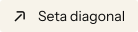

Navegação · Navegação
Estrutura revelada / 01
Ícones
por estrutura.
Pequenas formas, desenhadas com o mesmo cuidado do conjunto. Explore pictogramas autorais e logos para seus READMEs.
01 / Explorar
O catálogo.
Da navegação ao movimento.
Ícones, tags e badges.
Categoria, todas as tags selecionadas e busca são combinadas por E. A busca inclui nomes, usos, aliases e tags, sem distinguir acentos ou maiúsculas.
Navegação · Navegação
Navegação · Navegação
Interface · Interface
Mídia · Mídia
Mídia · Mídia
Tecnologias · Tecnologias / stack · Linguagem · Frontend
Tecnologias · Tecnologias / stack · Linguagem · Frontend
Tecnologias · Tecnologias / stack · Linguagem · Frontend
Tecnologias · Tecnologias / stack · Linguagem · Frontend
Tecnologias · Tecnologias / stack · Linguagem · Backend
Tecnologias · Tecnologias / stack · Linguagem · Backend
Tecnologias · Tecnologias / stack · Linguagem
Tecnologias · Tecnologias / stack · Framework · Frontend
Tecnologias · Tecnologias / stack · Framework · Frontend
Tecnologias · Tecnologias / stack · Framework · Frontend
Tecnologias · Tecnologias / stack · Framework · Frontend
Tecnologias · Tecnologias / stack · Framework · Frontend
Tecnologias · Tecnologias / stack · Framework · Frontend
Tecnologias · Tecnologias / stack · Runtime · Backend · Gerenciador de pacotes · JavaScript · TypeScript
Tecnologias · Tecnologias / stack · Runtime · Backend
Tecnologias · Tecnologias / stack · DevOps
Tecnologias · Tecnologias / stack · DevOps
Tecnologias · Tecnologias / stack · DevOps
Tecnologias · Tecnologias / stack · DevOps
Tecnologias · Tecnologias / stack · DevOps
Tecnologias · Tecnologias / stack · DevOps
Tecnologias · Tecnologias / stack · DevOps
Tecnologias · Tecnologias / stack · DevOps
Tecnologias · Tecnologias / stack · Banco de dados · Backend
Tecnologias · Tecnologias / stack · Banco de dados · Backend
Tecnologias · Tecnologias / stack · Banco de dados · Backend
Tecnologias · Tecnologias / stack · Design
Tecnologias · Tecnologias / stack · Design · 3D
Tecnologias · Tecnologias / stack · Design · 3D
Tecnologias · Tecnologias / stack · Design
Tecnologias · Redes sociais · Tecnologias / stack · Git · Repositório · Comunidade
Tecnologias · Redes sociais · Tecnologias / stack · Git · Repositório · Comunidade
Redes sociais · Redes sociais · Contato / contact
Redes sociais · Redes sociais
Redes sociais · Redes sociais
Redes sociais · Redes sociais
Redes sociais · Redes sociais
Redes sociais · Redes sociais
Redes sociais · Redes sociais · Contato / contact
Redes sociais · Redes sociais · Contato / contact
Tecnologias · Banco de dados · Backend · Linguagem
Contato · Contato / contact · Redes sociais · E-mail
Contato · Contato / contact · Redes sociais · Site
Seções de README · Seções de README · Sobre / about
Seções de README · Seções de README · Tecnologias / stack
Seções de README · Seções de README · Repositório
Seções de README · Seções de README · Interface
Seções de README · Seções de README · Instalação
Seções de README · Seções de README · Instalação · Navegação
Seções de README · Seções de README · Interface
Seções de README · Seções de README · Documentação · Docs
Seções de README · Seções de README · Arquitetura
Seções de README · Seções de README · Interface
Seções de README · Seções de README · Testes
Seções de README · Seções de README · Planejamento
Seções de README · Seções de README · Comunidade · Redes sociais
Seções de README · Seções de README · Git · Comunidade
Seções de README · Seções de README · Versões
Seções de README · Seções de README · Versões
Seções de README · Seções de README · Licença
Contato · Seções de README · Contato / contact · Redes sociais
Interface · Interface · Navegação
Interface · Interface
Interface · Interface · Navegação
Estados · Estados
Estados · Estados
Estados · Estados
Interface · Interface
Interface · Interface · Redes sociais
Interface · Interface · Estatísticas
Estados · Estados · Segurança
Estados · Estados · Testes
Tecnologias · Tecnologias / stack · Framework · Backend · JavaScript · TypeScript
Tecnologias · Tecnologias / stack · Framework · Backend · JavaScript
Tecnologias · Tecnologias / stack · Framework · Backend · JavaScript
Tecnologias · Tecnologias / stack · Banco de dados · Backend · TypeScript
Nenhum ícone encontrado. Tente outro nome ou categoria.
Ícone selecionado
arrow-up-right
CTAs, links de projetos e contato
Origem e condições de terceiros ↗



Geometrias originais · 0.5.0-draft.2
SVG · currentColor
<svg xmlns="http://www.w3.org/2000/svg" viewBox="0 0 24 24" width="24" height="24" fill="currentColor" color="currentColor"><g transform="rotate(45 12 12)"><path d="M5 10.75L9.88 5.87C11.05 4.7 12.95 4.7 14.12 5.87L19 10.75L17.76 11.99L12.88 7.11C12.39 6.62 11.61 6.62 11.12 7.11L6.24 11.99Z" fill="currentColor" stroke="currentColor" stroke-width="0.3" stroke-linejoin="round"/><path d="M11.125 9.25H12.875V20.5H11.125Z" fill="currentColor" stroke="currentColor" stroke-width="0.3" stroke-linejoin="round"/></g></svg>Os SVGs copiados preservam currentColor. A cor escolhida acima serve apenas ao preview.
02 / Implementar
Da forma ao uso.
Arquivos simples.
Sem runtime obrigatório.
HTML · SVG inline
A cor vem do CSS. O texto dá nome ao link e o ícone é decorativo.
html
<a href="#projetos" class="project-link">
Conhecer os projetos
<svg aria-hidden="true" focusable="false" xmlns="http://www.w3.org/2000/svg" viewBox="0 0 24 24" width="24" height="24" fill="currentColor" color="currentColor"><g transform="rotate(45 12 12)"><path d="M5 10.75L9.88 5.87C11.05 4.7 12.95 4.7 14.12 5.87L19 10.75L17.76 11.99L12.88 7.11C12.39 6.62 11.61 6.62 11.12 7.11L6.24 11.99Z" fill="currentColor" stroke="currentColor" stroke-width="0.3" stroke-linejoin="round"/><path d="M11.125 9.25H12.875V20.5H11.125Z" fill="currentColor" stroke="currentColor" stroke-width="0.3" stroke-linejoin="round"/></g></svg>
</a>
<style>
.project-link { color: #0b0b0b; }
.project-link svg { width: 20px; height: 20px; }
</style>CSS · cor por máscara
Exemplo de uso com o SVG avulso. O seletor deve ser aplicado a um elemento decorativo com aria-hidden="true".
css
.icon-arrow {
display: inline-block;
width: 1.25rem;
height: 1.25rem;
background: currentColor;
mask: url("./icons/svg/arrow-up-right.svg") center / contain no-repeat;
-webkit-mask: url("./icons/svg/arrow-up-right.svg") center / contain no-repeat;
}JavaScript · trocar o estado
O exemplo pressupõe um botão #motion com texto e uma imagem. Ele troca a apresentação; conecte também o estado à animação real do seu projeto.
js
const button = document.querySelector("#motion");
const image = button.querySelector("img");
const label = button.querySelector("span");
button.addEventListener("click", () => {
const paused = button.getAttribute("aria-pressed") !== "true";
button.setAttribute("aria-pressed", String(paused));
label.textContent = paused ? "Retomar animação" : "Pausar animação";
image.src = "./icons/svg/ink/" + (paused ? "play" : "pause") + ".svg";
});Astro · imagem local
Copie a variante autorizada para public/icons/ink/. Uma imagem externa usa a cor gravada no SVG, sem herdar currentColor da página.
astro
<a href="#projetos">
Conhecer os projetos
<img src="/icons/ink/arrow-up-right.svg"
width="20" height="20" alt="" />
</a>React · imagem local
Exemplo com <img>, sem pacote React específico. Copie o SVG autorizado para o diretório público da aplicação e adapte o caminho ao seu framework.
jsx
export function ProjectLink() {
return (
<a href="#projetos">
Conhecer os projetos
<img src="/icons/ink/arrow-up-right.svg"
width={20} height={20} alt="" />
</a>
);
}Markdown · README do GitHub
O caminho abaixo parte da raiz de um repositório que contém icons/. Para fundos claros, use ink; para escuros, paper. Em outros repositórios, copie o SVG autorizado ou use uma URL raw fixada em commit.
md
<picture>
<source media="(prefers-color-scheme: dark)"
srcset="icons/svg/paper/arrow-up-right.svg">
<img src="icons/svg/ink/arrow-up-right.svg"
width="24" height="24" alt="Abrir projeto">
</picture>03 / Diretrizes
Forma com intenção.
Curvas contidas, terminais retos e cortes por espaço negativo. Pictogramas autorais usam grade de 24 unidades. Os desenhos preservam os paths originais, preenchimentos e espaços internos. Pictogramas de contorno usam traço de 1,75; os desenhos preenchidos recebem apenas reforço de peso de 0,3 da mesma cor. Logos mantêm créditos e condições próprios.
Acessibilidade
Quando houver texto equivalente no controle, trate o ícone como decorativo: aria-hidden="true" no SVG inline ou alt="" em uma imagem. Se o ícone comunicar informação sozinho, dê um nome acessível ao controle ou um texto alternativo à imagem. Foco, alvo de toque e estado pertencem ao controle.
Direitos de uso
Todos os direitos reservados sobre ícones e código próprios. Logos de terceiros têm créditos e condições no manifesto e em icons/THIRD-PARTY.md. A disponibilidade pública e os botões de cópia não concedem licença geral de reutilização dos desenhos próprios. Obtenha autorização do titular antes de usar os materiais. As fontes desta página têm licença SIL OFL própria.
Ler condições completas ↗